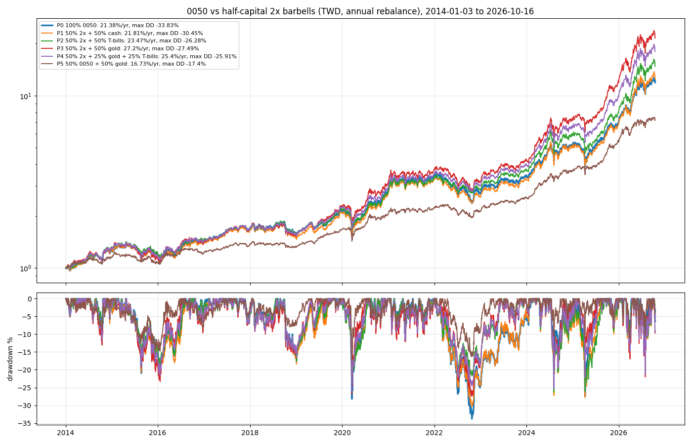

RS-TX-20261018-003 · TX · 2026-10-18
Half capital in a 2x Taiwan 50 with the other half in T-bills or gold, rebalanced yearly, cut 0050's worst drawdown from −34% to −26–27% in 2014–2026; without rebalancing it rose to −50%
用一半資金買正二維持台股曝險，另一半放美國短期公債、黃金或現金，能不能比全部買 0050 回檔小？報酬代價多少？
Headline Metrics 關鍵數字
-33.83
p0 max dd %
-25.91
p4 max dd %
-17.4
p5 0050 gold max dd %
-52.43
no rebalance worst max dd %
Key Findings 重點發現
每年調回時，每個組合都降低了最大回檔
2014–2026：0050 −33.83%；正二＋公債 −26.28%、正二＋黃金 −27.49%、正二＋黃金＋公債 −25.91%；2016 年起用真實 00631L 排序相同。
不調回比單抱 0050 更糟
正二比重越來越大，最大回檔 −49.6% 到 −52.4%（合成，2014 起）與 −45.1% 到 −52.0%（真實 00631L，2016 起）。
不用槓桿的 0050＋黃金回檔最小
−17.40%、年化 16.73%，對 0050 的 −33.83%、21.38%：回檔小、報酬也低。
一條有利的路徑
台股和黃金都大漲；樣本中 0050 最大跌 34%，加權在 2008 年跌 58%，正二在那種情況約跌 85%。
Chart 圖表


詮釋與實務意義
一半資金買正二保留台股曝險，另一半放美國公債或黃金，每年調回比例，2014–2026 年最大回檔從 −34% 降到約 −26–27%，報酬沒有變差。關鍵是每年調回：不調回時正二比重越來越大，回檔反而到 −50%。這段期間台股和黃金都大漲，沒有 2008 年等級的崩盤，見 RS-TX-20261018-004。
限制與注意事項
- 單一 12.8 年路徑，台股與黃金都大漲。
- 以 0050 合成正二（比 00631L 略樂觀）；真實 00631L 從 2016 年開始。
- 樣本中沒有 2008 年等級的崩盤（見 RS-TX-20261018-004）。
- 公債以 ^IRX 計息；黃金為 XAUUSD 現貨；匯率去除兩筆錯誤報價；紐約收盤延後一個台股交易日對齊。
- 未計交易成本以外的稅。